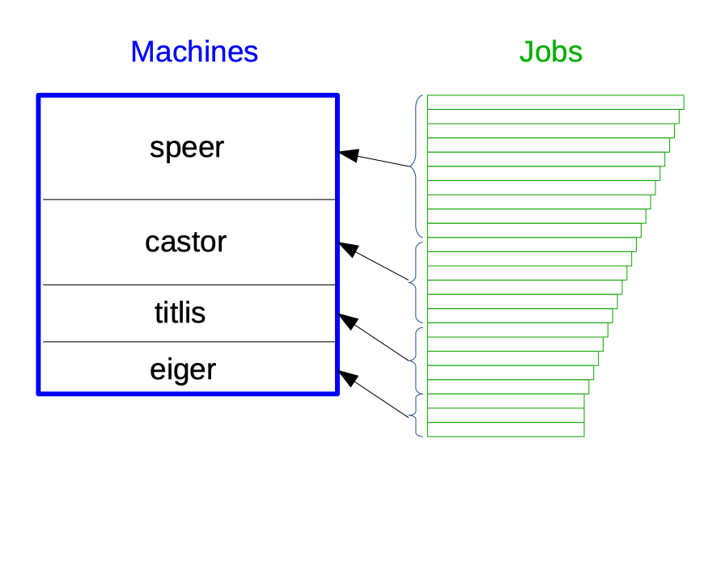

run_gs_jobs.RmdGS-Jobs are used to estimate SNP-effects in genomic breeding value estimation. For different breeds (rh, si, sf, bv, ob), different traits, different input data (full and reduced) and different estimation quantities (eff or rel) combinations are formed and jobs are defined. In total there are about 1000 different job definitions.
To be able to start the GS-jobs, conventional prediction of breeding values must be finished.
There is a deadline for when results of GS-jobs must be ready. To meet the deadline it is important to start the GS-jobs on the planed date which is a Friday. When starting the GS-jobs on a Friday gives a weekend to run the jobs. The total time of about 11 days should be enough for the GS-jobs in the ideal case. But this ideal case can only be realized if certain conditions are met. The conditions are mostly related to the very different performance of the different machines and the very different runtimes for the different GS-jobs. Here it is important to follow the rule that the jobs with the largest runtimes are run on the fastest computers, otherwise, the computation time is too high. The problem here is that it is not easy to determine the total computing time for each job. There are some informations in the logfiles, but they are dependent on the computer on which they run.

From a technical point of view, it is important to limit the number of jobs that are simultaneously running on any given machine by two parameters.
The goal is to let the GS-jobs running with as little interaction as possible. That means, at the beginning, we assign each server a number of jobs and they run without any intervention.
A first idea is to split the complete list of all jobs into smaller batches of jobs. The size of the batches should be smaller than the number of cores on each of the machines.
The computation of estimated genomic breeding values is done with a number of steps. By putting the single step in a sequence, the result is a pipeline that works on job-definition files. The job-definition files contain path information about the single compute jobs that must be run by the pipeline.
The current steps of the pipeline operate in a fashion that they ignore any job which does not fullfill the prerequisites of the current step. Futhermore, any existing result files from a previous run of the same step are either first deleted in the case of runBayesC.sh or are overwritten in the case of the prediction scripts. This requires that one step can only be performed whenever the previous step is already finished. This increases the overall runtime of the whole pipeline.
An Alternative idea might be to produce checker-scripts that can be run after each step which find the jobs that have not completed a given prerequisites. These jobs are then written to new job-definition files which can be used in a second call to the same pipeline step.